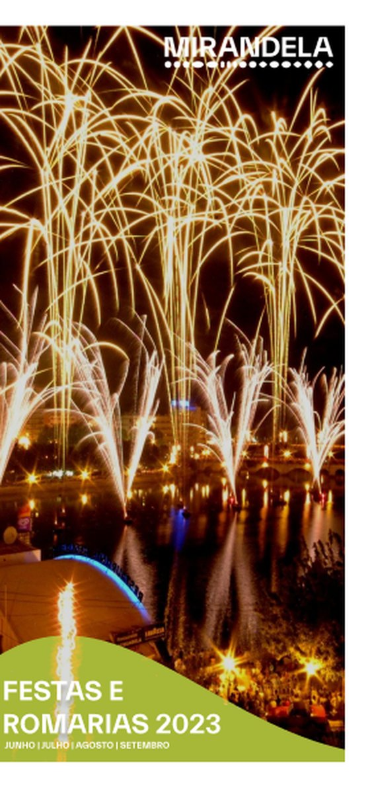

Design gráfico
UI/UX Multimédia Acessibilidade
Sou o João Mendo, designer UI/UX e estudante de Mestrado em Tecnologia e Multimédia na UTAD. Desenho produtos digitais centrados nas pessoas — claros, acessíveis e com intenção.

02 — Projetos

Design gráfico

UI/UX · Design de Interação

Investigação · Acessibilidade
Mais trabalhos em breve.
Estou a preparar as páginas dos projetos. Enquanto isso, pode ver os trabalhos no Behance ou espreitar os templates de cada tipo de trabalho.
Ver no Behance (abre num novo separador) Falar comigo

03 — Sobre
Sou estudante de Mestrado em Tecnologia e Multimédia na Universidade de Trás-os-Montes e Alto Douro, licenciado em Multimédia pelo Instituto Politécnico de Bragança.
Como Bolseiro de Investigação no projeto A-MoVeR trabalhei em design de interfaces, prototipagem, produção multimédia e comunicação digital. Interessa-me sobretudo o design centrado no utilizador, a acessibilidade e a usabilidade — e sou autor principal de uma publicação sobre a aplicação de Inteligência Artificial à acessibilidade digital.
04 — Percurso
–
A-MoVeR · Vila Real
UI/UX de soluções digitais para mobilidade elétrica, website do projeto, vídeos promocionais, redes sociais, newsletters e apoio à identidade visual.
–
Câmara Municipal de Mirandela
Redesign do website institucional de turismo com foco em UX, conteúdos para presença digital e materiais gráficos promocionais.
Verões 2021 – 2023
Salesianos de Mirandela
Planeamento de atividades e gestão de grupos de crianças e jovens: liderança, comunicação e trabalho em equipa.
– atual
Universidade de Trás-os-Montes e Alto Douro
–
ESACT — Instituto Politécnico de Bragança
Formação A-MoVeR · híbrida
· Intelligent Systems Conference
João Mendo, Joana Oliveira, Tiago Pinto, Tânia Rocha
05 — Serviços
Da investigação com utilizadores ao protótipo final: interfaces claras, testadas e acessíveis desde o primeiro esboço.
Websites, vídeos promocionais e conteúdos audiovisuais que comunicam com clareza em qualquer ecrã.
Identidade visual e conteúdos coerentes em cada ponto de contacto — do logótipo à newsletter.
Vamos conversar sobre como posso ajudar.
06 — Contacto
Procuro oportunidades em UI/UX e Multimédia. Tem um projeto ou uma vaga em mente? Escreva-me.